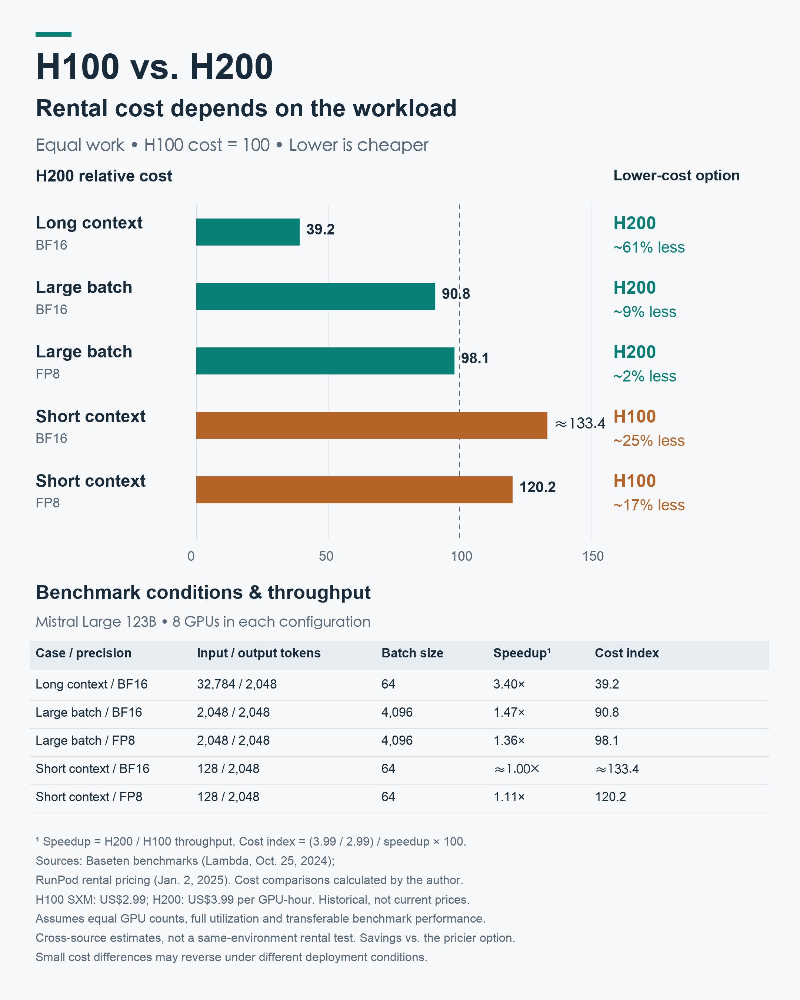
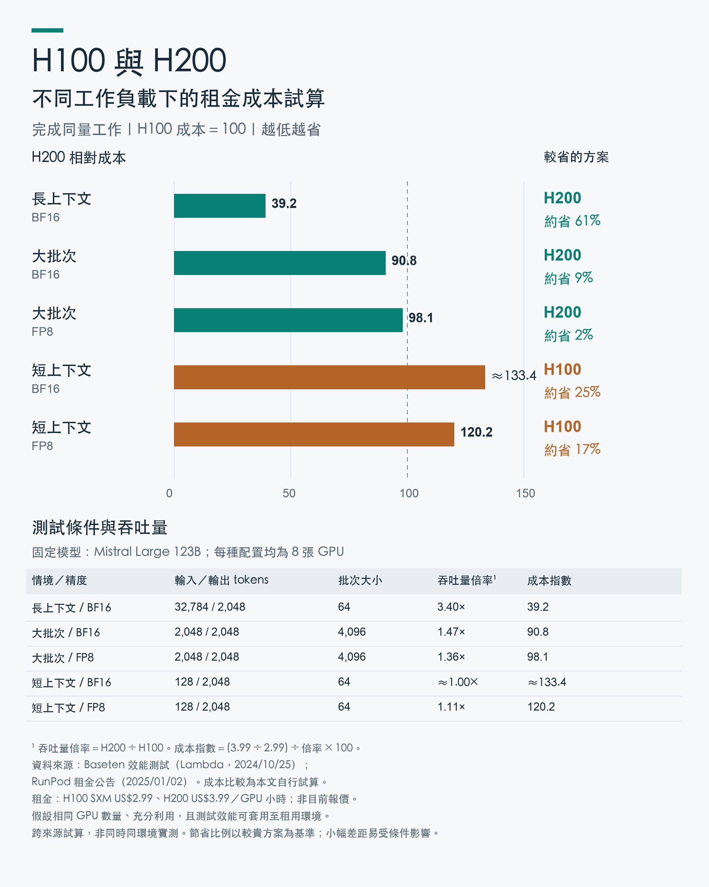
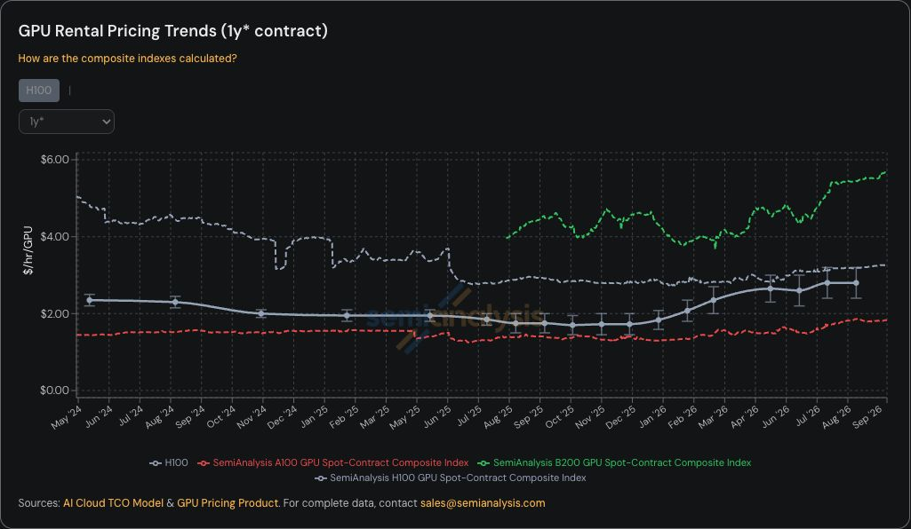
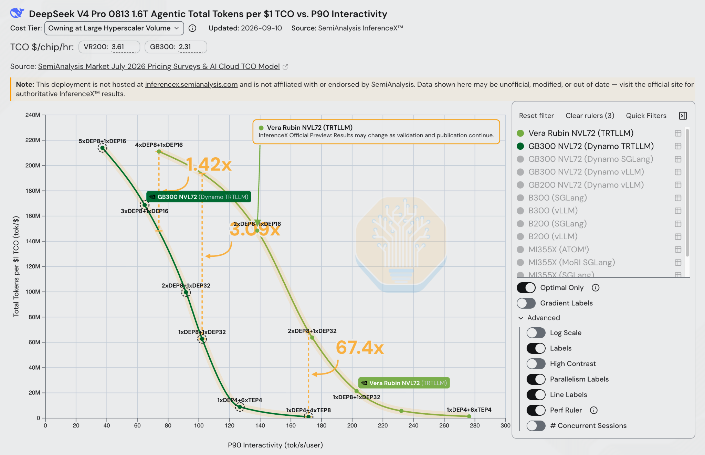

Ian Chang · 存檔：2026-10-03
Facebook 原帖 · LinkedIn 全文 · LinkedIn 分享貼文
Vera Rubin 推論效能提升67倍，為什麼舊 GPU 還沒變成電子垃圾？ 📌 【結論】67倍是在特定測試條件下，新舊系統每美元產出的差距，並不是所有工作都能得到的提升。要求模型回答得越快，新硬體的餘裕就越容易顯現；但算力需求很多樣，考慮租金之後，舊硬體在部分工作上仍可能有更好的 CP 值（成本效益）。新硬體大幅進步，和舊硬體仍然有市場，並不衝突。 🔍 如果 Vera Rubin 真的提升67倍，舊 GPU 為什麼還有人租？ SemiAnalysis 在2026年9月14日發表了一篇文章，標題指出 Vera Rubin NVL72 的每美元推論效能提升了67倍，內文也再次強調，黃仁勳低估了自家新硬體的性能提升幅度。 我一直很欣賞黃仁勳對 AI 的洞察。2025年3月的 GTC 上，他曾說：「當 Blackwell 開始大量出貨，Hopper 就算送人，也沒人要了。」這句話一直留在我心裡，也因此，後來看到 H100 的租金竟然回升，我其實很驚訝。 當然，SemiAnalysis 這篇文章比較的是 Vera Rubin 和 GB300，並不是 H100。不過，這仍然帶出同一個問題：新硬體進步這麼快，為什麼舊硬體還有市場？ 要解釋這件事，我們可以先回頭看：這個67倍，到底是在什麼條件下比出來的？ SemiAnalysis 這次提供的測試很有價值，讓我們有機會仔細看，新一代硬體在不同要求下，究竟進步了多少。不過，相較於標題的67倍，我覺得內文的整條曲線更值得討論。 📊 要求每個回答生成得越快，這組測試的差距就越大 先說結論：67倍是在特定測試條件下得到的結果。在這組比較裡，要求模型回答得越快，也就是每個回答每秒要生成更多 token，新舊硬體的每美元產出差距就越大。當這個速度要求逼近 GB300 在該配置下的極限，Vera Rubin 還有餘裕，倍率就被大幅拉開了。 SemiAnalysis 的圖表比較的是 GB300 NVL72 與 Vera Rubin NVL72 機櫃，在 DeepSeek V4 Pro 的 Agentic 工作負載下，使用 TensorRT-LLM 推論軟體的表現。 橫軸是對每個回答生成速度的要求，以 P90 Interactivity 表示，可以先理解成：連比較慢的那部分回答，也要達到一定的 token 生成速度。縱軸則是考慮總持有成本（TCO）後，每一美元能換到的總 token 產出。 也就是說，這張圖同時在問兩件事：每個回答要多快？在滿足這個要求之後，同樣成本能服務多少工作？ 當速度要求提高，兩種機器的曲線都往下走，但 GB300 下降得更快。圖中標示的三個比較點，差距從1.42倍、3.09倍，一路擴大到約170 TPS 時的67.4倍。 所以，這不是說換了 Vera Rubin，每個回答就會快67倍。而是在同樣嚴格的回答速度要求下，這組配置的每美元總產出，可以拉開到這麼大的差距。 原文提到，較常見的60到100 TPS 要求下，提升幅度大約是1.4到3倍。這已經是顯著的進步，但和67倍給人的印象，仍然很不一樣。 67倍有它的意義，只是它呈現的是曲線上差距特別大的位置。此時 GB300 的每美元產出已經很低，作為分母的數字變小，倍率就顯得格外驚人。讀這個標題時，需要把條件一起帶回來看。 💻 今天的餘裕，可能是明天的需要 這讓我想到小時候從486換到586（第一代的 Pentium）的經驗。 有些工作，486本來就跑得動，換成586，只是等得比較短。但有些工作在486上已經非常吃力，甚至等到讓人覺得根本跑不動，換了586之後，感受就完全不同。差別不只是規格表上快了多少，而是原本很痛苦的事情，突然變得可以順順地做。 比較年輕的讀者，也許可以想成：爸媽給你的 iPhone 7 用了好多年，中間還換過電池，但越來越卡，有些程式幾乎跑不動。直到去年自己存錢買了 iPhone 17，才發現使用起來是完全不同的等級。 這個比喻想說的是，同一次硬體升級，碰到不同的工作，感受到的差距可能很不一樣。尤其當舊硬體已經接近應付不了的地方，新硬體的餘裕就會特別明顯。 AI 也有類似的情況。隨著 Agentic Coding 等應用發展，模型可能需要反覆讀取資料、修改程式、呼叫工具，再根據結果繼續工作。當更多步驟要在有限時間內完成，我們就可能對每一步的回答速度提出更高要求。 這不代表未來所有工作都會走到67倍的那個位置。工作變複雜，也不一定全部反映在 token 生成速度上。但我的理解是，今天看起來比較嚴格的速度要求，未來可能會出現在更多使用情境裡。 我自己使用 Codex、Claude Code 時，也越來越感受到等待的累積。等待不全是模型生成造成的，還包括工具執行、外部服務與其他步驟。不過，當工作需要來回很多次，模型回答得更快、更穩定，仍然有實際價值。 因此，如果是為了前沿工作和未來需求添購硬體，優先考慮新一代機器是合理的。今天還用不到的餘裕，可能就是明天需要的能力。 🧮 新硬體比較快，但租金差距也要一起算 真實世界的算力需求，並沒有全部集中在最前沿。不同工作的上下文長度、批次大小、速度要求都不一樣。新硬體可以更快，但如果某一種工作快得沒有那麼多，而舊硬體的租金又比較便宜，最後算下來，舊硬體反而可能更划算。 Baseten 在2024年10月25日刊登於 Lambda 的測試文章中，用 Mistral Large 123B 模型，比較八張 H100 和八張 H200 在不同工作下的表現。 我們在這裡做了一個試算：把它的效能測試結果，套入 RunPod 於2025年1月2日公告的報價——H100 SXM 每卡每小時2.99美元、H200 每卡每小時3.99美元——比較完成同量工作的租金成本。以下成本差異是我們根據這兩份資料自行計算，並非 Baseten 原文公布的成本結果。 在這組報價下，H200 每小時租金比 H100 高約三分之一。換句話說，它的吞吐量，也就是所有請求合計每秒產出的 token 數，要提高超過三分之一，完成同量工作的租金成本才會比較低。 在長上下文的測試中，H200 的吞吐量是 H100 的3.4倍。即使租金比較高，完成同量工作的成本仍然可以減少約61%。 但在短上下文、批次較小的測試中，H200 的吞吐量提升約為0到11%，不足以抵銷租金差距。這時候用 H100，反而可以省下約17到25%的成本。 換到大批次的測試，優勢又轉向 H200，依精度設定不同，成本約低2到9%。其中2%的差距很小，實際部署條件稍有不同，就可能改變結果。 這個試算假設，測試中的相對吞吐量可以套用到租用環境，而且有足夠工作讓機器持續運作；它不是實際帳單的預測。不過，同樣兩款硬體、同樣一組租金，只是換了工作內容，哪一款比較划算就可能反轉。 🔀 工作有差異，硬體配置也就有分工的空間 Mélange 的研究則從另一個角度支持這個觀念。它把不同 GPU 的價格、處理能力，以及工作的延遲要求一起考慮，選擇適合的 GPU 組合並分配請求。在它研究的工作負載與價格條件下，混用不同型號的 GPU，可以比全部採用單一型號更省成本。 這不表示任何 GPU 隨便混搭都會比較好，而是說：工作有差異，硬體配置也就有分工的空間。 💰 租金證明舊硬體仍然有市場 如果舊硬體仍能承接有價值的工作，那麼，新世代上市之後，舊世代的租金也未必會隨著時間一路往下掉。 SemiAnalysis 在2026年4月2日的報告中指出，H100 的一年期租約價格，從2025年10月低點的每 GPU 小時約1.70美元，回升到2026年3月的約2.35美元，漲幅接近40%。 Silicon Data 對2026年4月至5月的追蹤，也呈現出 H100 租金沒有全面下滑的情況：大型雲端業者的價格大致持平，NeoCloud 業者的價格則上升約3.8%。 這些價格變化，當然不能全部歸因於舊硬體的成本效益。供給、交付時間、可租到的容量，以及整體需求，都會影響租金。但至少可以看出，舊硬體並沒有因為新硬體出現，就立刻失去市場。 📍 新硬體大幅進步，和舊硬體仍有市場，並不衝突 新硬體的優勢是顯著的。尤其當我們要求模型回答得更快，新硬體的餘裕就更容易顯現。隨著 Agentic Coding 等應用發展，這些餘裕可能會越來越有用。但這不代表所有工作都能得到67倍的提升，也不能直接把67倍當成新舊硬體之間固定的效能差距。 另一方面，舊硬體也可能有更好的 CP 值。我們這次選用較早世代的 H100 與 H200 測試資料，搭配租金做了一個試算。在短上下文、批次較小的情境下，H200 的吞吐量提升不足以抵銷租金差距，使用 H100 反而更划算；換成長上下文或大批次，優勢又轉向 H200。這個例子讓我們看到，真實世界的算力需求很多樣，適合使用哪一代硬體，還是要看工作內容、速度要求，以及取得算力的成本。 所以，如果是為了前沿工作和未來需求添購硬體，應該優先考慮新一代的機器。但對已經存在的舊硬體來說，只要租金與工作需求搭配得合適，它仍然有發揮價值的空間。新硬體大幅進步，和舊硬體仍然有市場，這兩件事並不衝突。 資料來源： https://substack-post-media.s3.amazonaws.com/public/images/ac2da106-c1f2-4c85-ab6c-858908f06c05_2048x1322.png https://lambda.ai/blog/partner-spotlight-evaluating-nvidia-h200-gpus-for-ai-inference-with-baseten https://blog.runpod.io/h200s-tensor-now-available-on-runpod/ https://arxiv.org/html/2404.14527v4 https://newsletter.semianalysis.com/p/the-great-gpu-shortage-rental-capacity https://www.silicondata.com/blog/h100-index-may-2026-two-tiers-two-regimes https://www.nvidia.com/en-us/on-demand/session/gtc25-s72484/ https://gpu-index.semianalysis.com/



